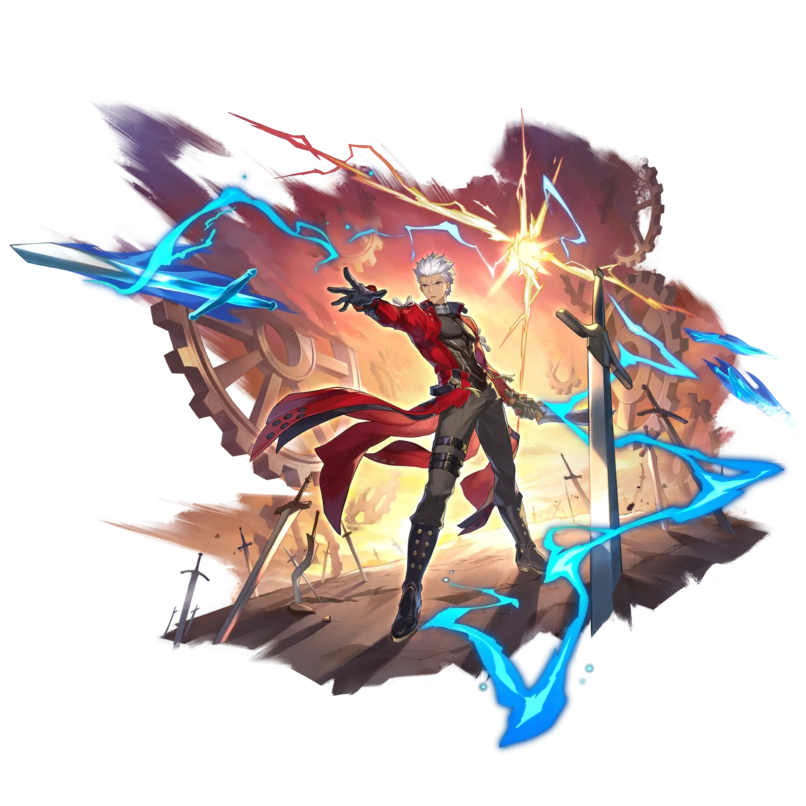

Archer
Best Archer build guide for Honkai Star Rail. See Archer's best Relics, Light Cones, teams, Eidolons, Trace priority, and how to play Archer.
🔍 Detail Skill
Semua skill aktif dan pasif beserta efeknya.
Deals Quantum DMG equal to #1[i]% of Archers's ATK to one designated enemy.
Enters the "Circuit Connection" state. Deals Quantum DMG equal to #1[i]% of Archer's ATK to one designated enemy. When using his Skill in the "Circuit Connection" state, the current turn does not end, and the DMG dealt by Archer's Skill increases by #2[i]%. This effect can be stacked up to 2 times, lasting until he exits the "Circuit Connection" state. After actively using his Skill 5 time(s) or w
When Archer's teammate attacks an enemy target, Archer consumes 1 Charge and immediately launches Follow-up ATK on the primary target, dealing Quantum DMG equal to #1[i]% of Archer's ATK and recovering 1 Skill Point. If the target is defeated before this Follow-up ATK is launched, the Follow-up ATK will be directed at one random enemy instead.
⚔ Light Cone Terbaik
Diurutkan dari yang paling kuat. Persentase menunjukkan performa relatif terhadap pilihan terbaik.
💎 Relic Set Terbaik
Set terbaik untuk karakter ini, diurutkan berdasarkan prioritas.
📊 Stat Utama
Stat yang dicari pada tiap slot.
👥 Tim yang Direkomendasikan
Karakter yang sering dipasangkan bersama Archer.
 Dan Heng • Permansor Terrae
Dan Heng • Permansor Terrae
 Gallagher
Gallagher
 Ruan Mei
Ruan Mei
 Silver Wolf
Silver Wolf
 Cipher
Cipher
🔗 Lanjutkan
Build ini dirangkum dari Prydwen Institute. Starwise tidak menghitung sendiri. Angka bisa berubah setelah patch atau karakter baru rilis.